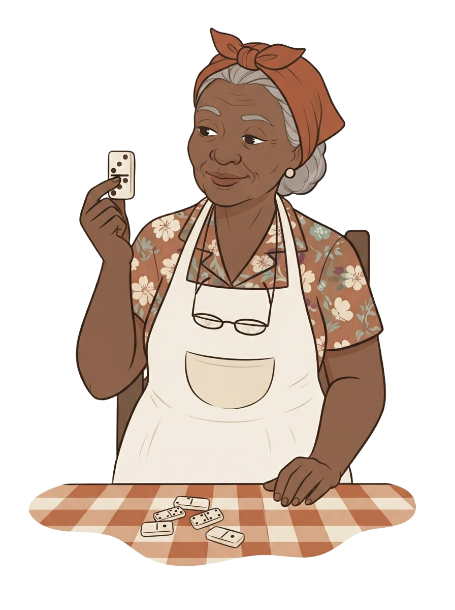
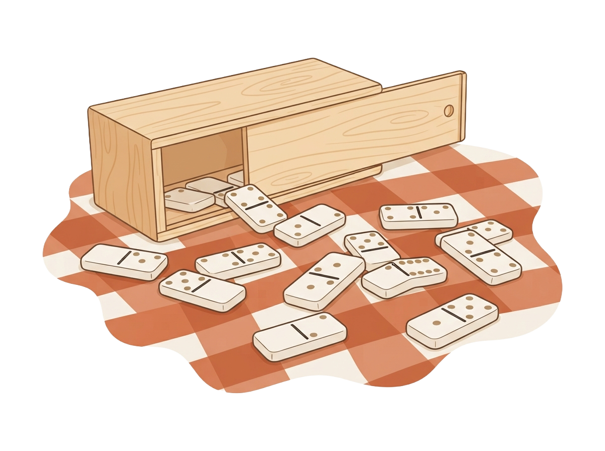
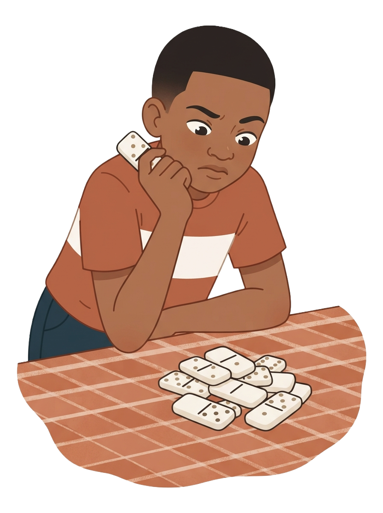
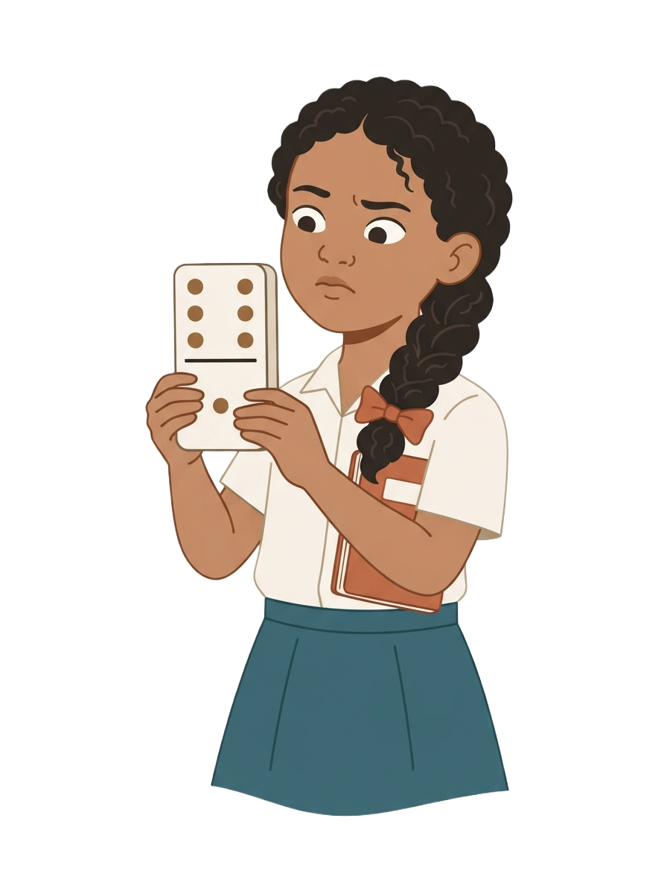

En la galería de doña Sobeida, en Moca, se armó la mesa de dominó. La caja se volcó. Ella lee las fichas sin contar los puntos.


Toca las tres viñetas para saber qué pasó.
La ficha se ve un instante. Di cuántos puntos tenía.
Toca una ficha y después la cesta con su número.
Mueve la barra de un lado al otro.
Toca la ficha que muestra cinco puntos.
Cuatro fichas tienen el mismo número. Toca la que no.

¿Cuántas fichas hay? Calcula a ojo y decide.
Voltea las tres fichas y mira sus grupos.
Toca una ficha y después su casilla.
Toca cada pareja y llévala al hueco.
Toca la ficha que tiene más puntos.
Toca las tres fichas de seis puntos.
Toca una ficha y di cómo la viste.
Abre las tres solapas de la mano.
¿Cómo te fue? Aquí no hay respuesta mala.
¿Cómo se lee una ficha entera de una sola vez?
